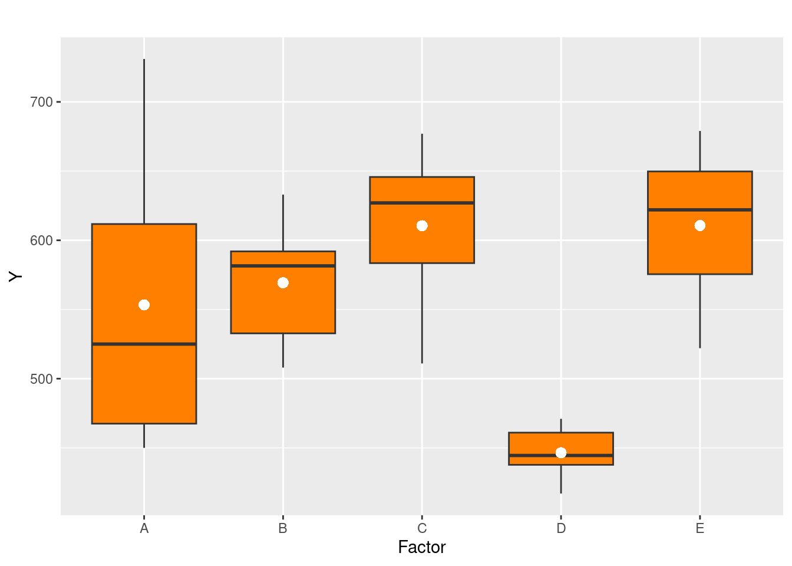
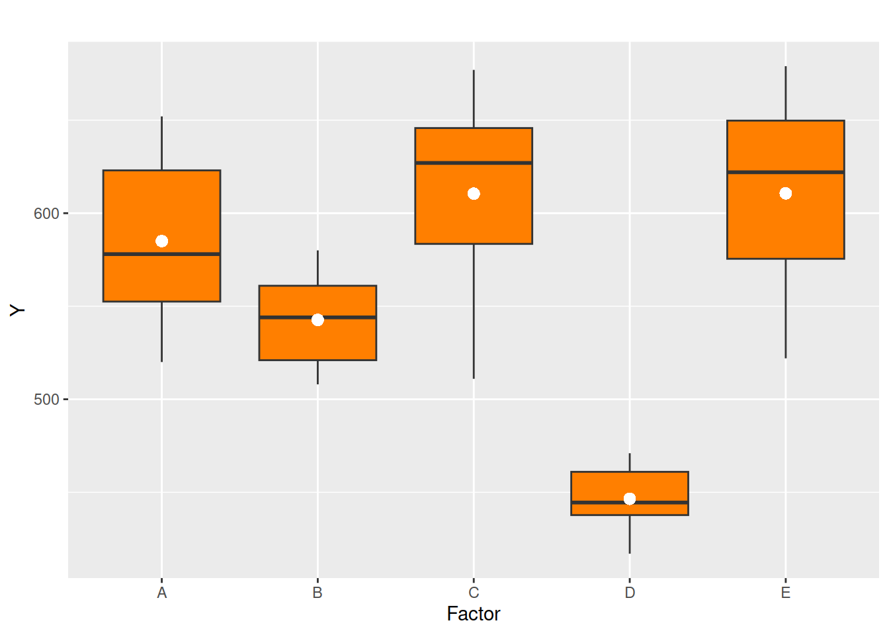

Inicialmente se presetan una serie de conceptos que forman parte de los modelos de diseños experimentales.
Consisite en dividir la variabilidad total de la variable respuesta (\(Y\)) por subgrupos que permite determinar si las medias para cada subgupo son iguales o diferentes. En el caso de tener k=2 subgrupos se puede emplear como estadístico de prueba a \(T \sim t_{v: n_1+n_2-2}\). Para los casos donde \(k>2\) se emplea el estadístico \(F\)
\[Ho:\hspace{.5cm} \mu_A = \mu_B = \dots
=\mu_E\] \[Ha: \text{Al menos dos
medias no son iguales}\]

En este caso se considera como variable independiente \(X\) que tiene como rango una conjunto de valores fijos o niveles para los cuales se observan sus respectivos valores asociados de \(Y\)
A la variable que agrupa los diferentes niveles que determinan las subpoblacionesde \(Y\), se le denomina factor y conforma una variable cualitativa.
El modelo a construir tratará de determinar si existe o no una relación entre la variable respuesta \(Y\) y una variable cualitativa llamada factor
Se considera tratamiento a cada nivel que toma el factor que proporciona información de \(Y\) asociada
Se considera replica con el número de veces que se repote el tratamiento para un mismo individuo
De acuerdo con lo anterior los datos están conformados de la forma:
| Tratamientos | \(T_1\) | \(T_2\) | \(T_3\) | \(\dots\) | \(T_k\) |
|---|---|---|---|---|---|
| \(y_{11}\) | \(y_{21}\) | \(y_{31}\) | \(\dots\) | \(y_{k1}\) | |
| \(y_{12}\) | \(y_{22}\) | \(y_{32}\) | \(\dots\) | \(y_{k2}\) | |
| \(y_{13}\) | \(y_{23}\) | \(y_{33}\) | \(\dots\) | \(y_{k3}\) | |
| \(\vdots\) | \(\vdots\) | \(\vdots\) | \(\vdots\) | \(\vdots\) | |
| \(y_{1n_{1}}\) | \(y_{2n_{2}}\) | \(y_{3n_{3}}\) | \(\dots\) | \(y_{kn_{k}}\) | |
| medias | \(\bar{y_{1}}\) | \(\bar{y_{2}}\) | \(\bar{y_{3}}\) | \(\dots\) | \(\bar{y_{k}}\) |
Para cada tratamiento \(T_{i}\) se tomará una muestra de tamaño \(n_{i}\)
Esto permite dividir la variabilidad total de \(Y\) en los siguientes componentes:
SCTr : Variabilidad entre tratamientos : \(\displaystyle\sum_{i=1}^kn_i (\bar{y_{i}}-\bar{\bar{y}})^2\)
SCE : Variabilidad relacionada con los errores : \(\displaystyle\sum_{i=1}^{k} \displaystyle\sum_{j=1}^{n_{i}} (y_{ij} - \bar{y_{i}})^2\)
SCT : Variabilidad total : \(\displaystyle\sum_{i=1}^{k} \displaystyle\sum_{j=1}^{n_{i}} (y_{ij} - \bar{\bar{y}})^2\)
| Fuentes de variación | grados de libertad | Suma de Cuadrados | Cuadrados medios | Estadístico F | valor p |
|---|---|---|---|---|---|
| Tratamientos | k-1 |
SCTr |
MCTr = SCTr/(k-1) |
F = MCTr/MCE |
\(f_{v_1:k-1,v_2:nk-k, \alpha}\) |
| Error | nk-k |
SCE |
MCE = SCE/(nk-k) |
||
| Total | nk-1 |
SCT |
La comparación de MCTr con MCE conforma el
estadístico F, que determina si la variación explicada por los
tratamientos es estadística,mente superior a la variación explicada por
los errores o el componente aleatorio.
En caso de no rechazarse la \(Ho : \mu_{1} = \mu_{2} = \dots = \mu_{k}\), se concluye que los tratamientos generan igual resultado y por tanto no existen efectos diferentes de ellos sobre la variable respuesta.
Por el contrario si \(Ho\), se rechaza, se concluye que por lo menos existe alguna \(\mu_{i} \neq \mu_{j}\). Para identificar cuales son las medias diferentes se realizan pruebas de comparaciones múltiples :
La siguiente información corresponde a
| i | 1 | 2 | 3 | 4 | 5 | 6 |
|---|---|---|---|---|---|---|
| Tratamientos | ||||||
| A | 551 | 557 | 520 | 631 | 599 | 632 |
| B | 555 | 580 | 508 | 563 | 533 | 517 |
| C | 639 | 615 | 511 | 573 | 648 | 677 |
| D | 471 | 449 | 440 | 437 | 417 | 465 |
| E | 563 | 631 | 522 | 613 | 656 | 679 |
Donde:
\(A\),\(B\),\(C\),\(D\) y \(E\) consforman los \(k=5\) tratamientos, cada uno de ellos con \(n_i=6\) replicas

Df Sum Sq Mean Sq F value Pr(>F)
x1 4 113524 28381 13.12 6.84e-06 ***
Residuals 25 54076 2163
---
Signif. codes: 0 '***' 0.001 '**' 0.01 '*' 0.05 '.' 0.1 ' ' 1 Tratamientos medias
1 A 585.0000
2 B 542.6667
3 C 610.5000
4 D 446.5000
5 E 610.6667 Tukey multiple comparisons of means
95% family-wise confidence level
Fit: aov(formula = y1 ~ x1, data = datos)
$x1
diff lwr upr p adj
B-A -42.3333333 -121.19305 36.52638 0.5252184
C-A 25.5000000 -53.35972 104.35972 0.8745391
D-A -138.5000000 -217.35972 -59.64028 0.0002222
E-A 25.6666667 -53.19305 104.52638 0.8719603
C-B 67.8333333 -11.02638 146.69305 0.1166258
D-B -96.1666667 -175.02638 -17.30695 0.0114333
E-B 68.0000000 -10.85972 146.85972 0.1152234
D-C -164.0000000 -242.85972 -85.14028 0.0000203
E-C 0.1666667 -78.69305 79.02638 1.0000000
E-D 164.1666667 85.30695 243.02638 0.0000200Al examinar los resultados de las pruebas de comparaciones multiples de Tukey se observa que solo se presentan diferencias estadisticas entre las medias de los tratamiento D-C y E-D